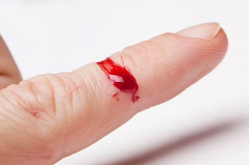
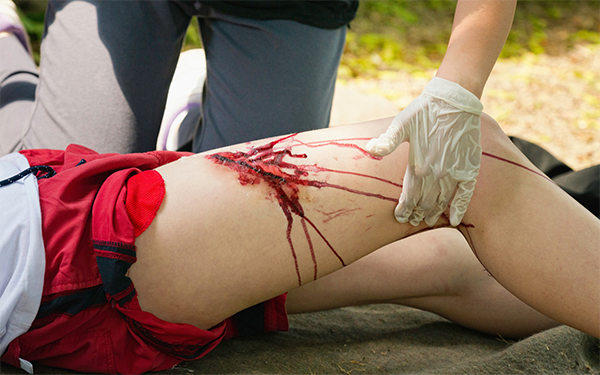
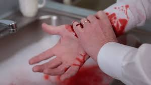
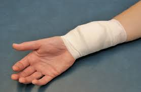
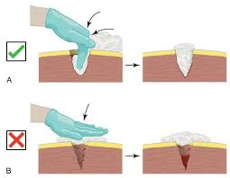

Tipos de Hemorragias
As hemorragias são classificadas em 3 tipos: Capilares, Venosas e Arteriais
Hemorragia Capilar
É uma perda de sangue que ocorre em pequenos vasos sanguíneos da pele. É o tipo de hemorragia mais comum e superficial.
Caracteristicas
- Sangramento lento e avermelhado, menos vivo que o sangue arterial
- Ocorre em pequenos cortes ou escoriações
- Afeta apenas os pequenos vasos que chegam até a superfície do corpo, chamados de capilares
- É facilmente reconhecida por ser visível

Hemorragia Venosa
É um sangramento que ocorre em veias, devido a um corte profundo ou grande. O sangue é mais escuro e sai de forma lenta e contínua.
Caracteristicas
- Fluxo lento e continuo
- De cor vermelho escuro
- Poder ser de moderado a grande volume
- Normamente ocorre em ferimentos mais profundos

Hemorragia Arterial
É uma lesão grave que ocorre quando há rompimento de uma artéria, o que provoca uma perda de sangue intensa e rápida
Caracteristicas
- De cor vermelho vivo
- Alto fluxo em jatos pulsateis
- Se não estancada dentro de aproximadamente 5 minutos podem levar a vitima a óbito!

Metodos de Controle e Estancamentos de Hemorragias
Após identificada a hemorragia, partimos para as medidas cabiveis para cada tipo.
Para hemorragias do tipo Capilares por exemplo, como possuem um fluxo de sangramento bem baixo, 90% das vezes elas cessam por si só, porem em hemorragias mais graves como as Arteriais, se não forem cessadas com brevidade, podem ser Fatais
Para o controle e estancamento de hemorragias, hoje em dia temos 5 teecnicas:
- Pressão Direta
Consistem em, com uma gaze, compressa ou qualquer tipo de tecide desde que limpo, coloque sobre o ferimento e com a sua mao aplique força e mantenha precionado ate que pare o sangramento!(Não remova o tecido para observar se foi cessado o sangramento, pois tal ato podera reativar o sangramento)
- Curativo Compressivo
>É um tipo de curativo que aplica pressão controlada sobre uma área lesionada, com uma gaze ou compressa sobre o ferimento, com uma atadura ou outro tipo de tecido, enrole sobre o curativo de forma a manter precionado

- Preenchimento de Ferida
A técnica que consiste em preencher a cavidade da ferida com uma solução fisiológica (SF 0,9%). É também conhecida como "packing the wound", preencha a cavidade mantendo o tecido bem precionado para que não haja espaço para o sangramento.

- Tornoquete
O principal objetivo do torniquete é controlar o sangramento em situações de emergência, evitando a perda excessiva de sangue e ajudando a estabilizar o paciente até a chegada de atendimento médico profissional. sua função é nada mais que exercer uma alta pressão assim cortando a circulação de sangue no membro aplicado
]
- Agente Hemostatico
É um produto que ajuda a controlar o sangramento e a coagulação do sangue,de facil e rapida aplicaçãp, porem pouco usado no Brasil devido ao seu alto valor podendo custar de R$60,00 até R$100,00 a unidade!

Voltar